ПНР профилегибочного станка Sahinler
Пуско-наладочные работы. Настройка профилегибочного станка, регулировка валков, проверка качества гиба. Клиент — производитель металлоконструкций в Москве. Заводская точность гиба восстановлена, станок введён в эксплуатацию за 1 день.

Ремонт главного цилиндра Stalex
Восстановление работоспособности главного гидроцилиндра листогиба. Замена уплотнений, прокачка. Клиент — московский цех металлообработки. Станок простоял 3 дня — восстановлен за 2 дня. Экономия на замене цилиндра — около 200 000 ₽.

ПНР листогибочного пресса Ermaksan
Пуско-наладочные работы на стойке cybTouch. Настройка параметров гиба, обучение оператора. Клиент — завод в Подольске. После пуско-наладки станок вышел на проектную мощность, оператор обучен работе с ЧПУ.

ПНР ленточнопильного станка Bekamak
Пуско-наладочные работы. Настройка натяжения полотна, регулировка подачи, проверка реза. Клиент — металlobаза в Москве. Станок подготовлен к работе с профилем и трубой. Точность реза — в пределах нормы.

ПНР дробильного оборудования
Пуско-наладочные работы дробильного оборудования. Настройка ножей, регулировка зазоров. Клиент — перерабатывающее предприятие в Тверской области. Оборудование запущено после длительного простоя. Работоспособность восстановлена полностью.

Ремонт ленточнопильного станка Bomar
Замена гидравлического масла, ремонт датчика поворота рамы, регулировка полотна для реза в 90°. Клиент — Калужская область. Станок для резки труб и профиля. Точность реза восстановлена, клиент доволен.

ПНР листогибочного пресса E22
Пуско-наладочные работы листогибочного пресса на стойке E22. Калибровка, настройка программ. Клиент — производство в Москве. Пресс настроен под серийное производство, выставлены базовые программы для типовых операций.

Настройка листогибочного пресса cybTouch
Настройка и регулировка листогибочного пресса на стойке cybTouch. Программирование, обучение. Клиент — Подольск. Оператор обучен созданию программ для типовых деталей. Скорость наладки новой детали — от 5 минут.

Замена подшипников ленточнопильного станка PILOUS ARG 235 plus
Замена подшипников на ведущем и ведомом шкивах ленточнопильного станка PILOUS ARG 235 plus. Выработка подшипников вызывала вибрацию и отклонение полотна. Клиент — металлообрабатывающее предприятие в Подольске. Станок восстановлен, вибрация устранена, точность реза в норме.
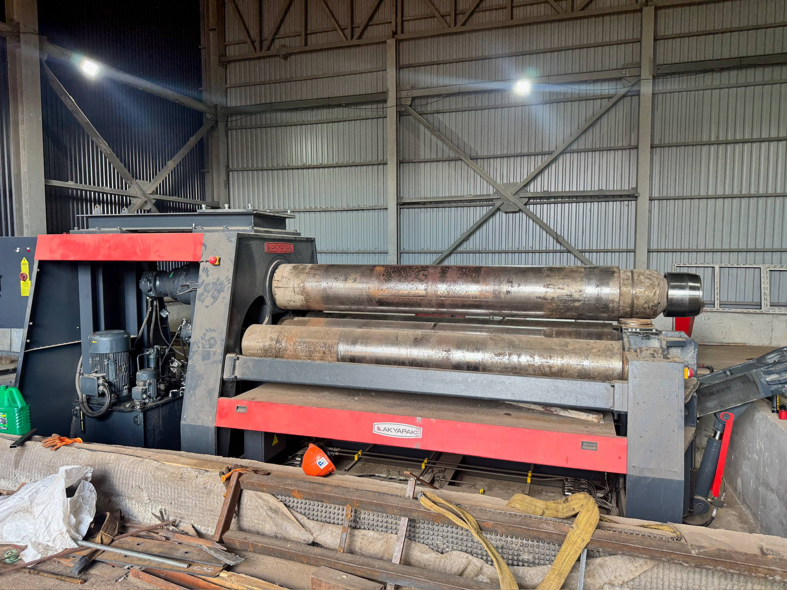
Замена главного вала вальцовочного станка AKYPAK
Замена изношенного главного вала вальцовочного станка AKYPAK. Вал имел критический износ в зоне опор, что приводило к биению и неравномерному вальцованию. Клиент — производство трубных изделий. Вал заменён, биение устранено, геометрия вальцовки восстановлена.
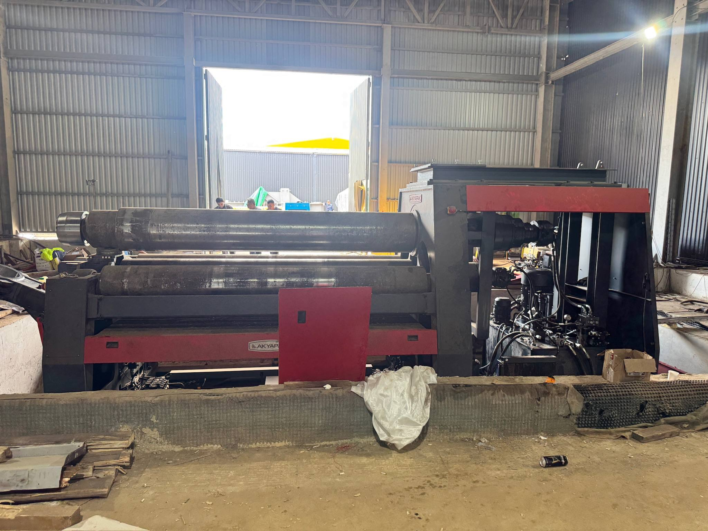
Замена главного вала вальцовочного станка AKYPAK (второй вал)
Продолжение работ по восстановлению вальцовочного станка AKYPAK — замена второго изношенного вала. Параллельно выполнена проверка и регулировка зазоров в опорах. Клиент — тот же завод в Москве. Оба вала заменены, станок вышел на проектную точность.
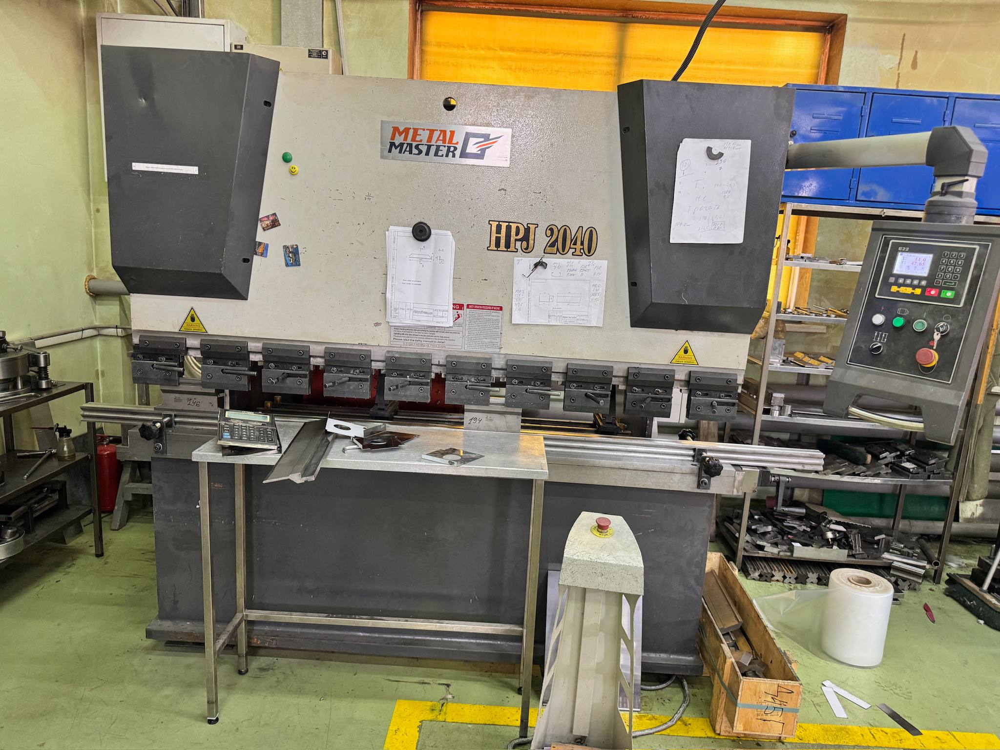
Настройка оси X листогибочного пресса METAL MASTER HPJ 2040
Диагностика и настройка оси заднего упора (ось X) листогибочного пресса METAL MASTER HPJ 2040 на стойке E21. Ось давала неверные координаты, что приводило к неточному гибу. Клиент — производство в Московской области. Ось откалибрована, точность позиционирования восстановлена.
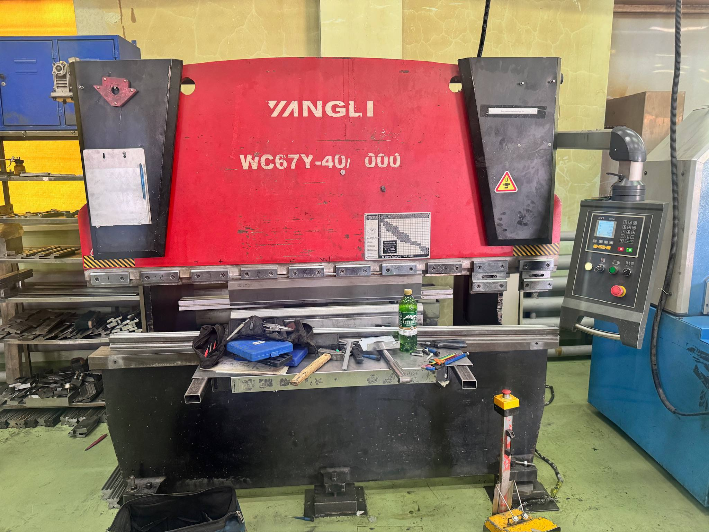
ПНР листогибочного пресса YANGLI WC67Y-40/2000
Пуско-наладочные работы листогибочного пресса YANGLI WC67Y-40/2000. Настройка гидравлической системы, калибровка ножей, обучение оператора. Клиент — завод в Тверской области. Станок запущен после доставки, оператор обучен базовым операциям.
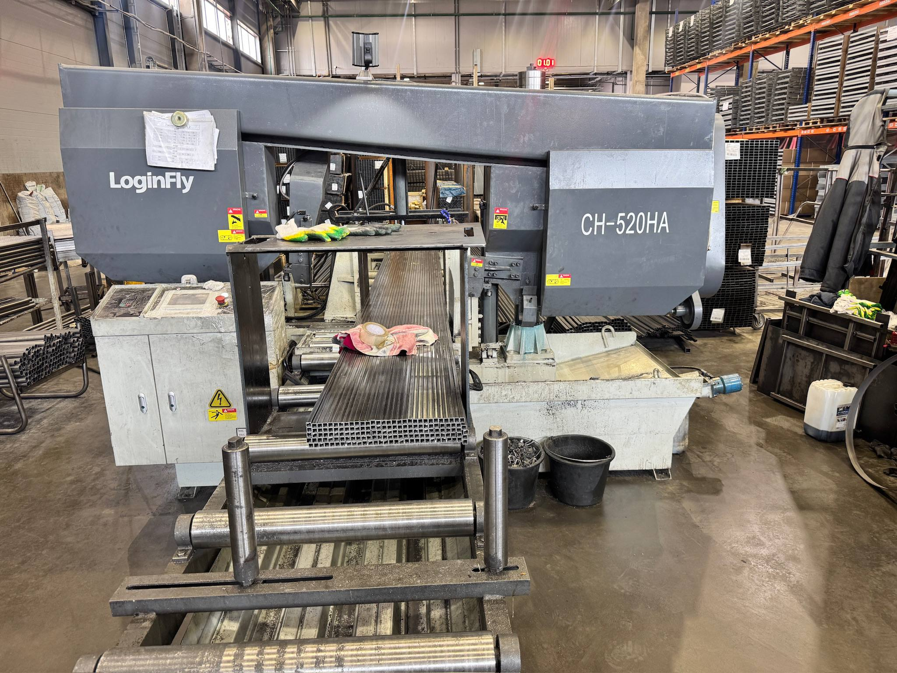
Замена датчика энкодера ленточнопильного станка LoginFLY CH-520HA
Диагностика и замена вышедшего из строя датчика энкодера на ленточнопильном станке ЧПУ LoginFLY CH-520HA. Неисправный датчик вызывал некорректное позиционирование поворота рамы. Клиент — производство в Москве. Датчик заменён, позиционирование восстановлено.
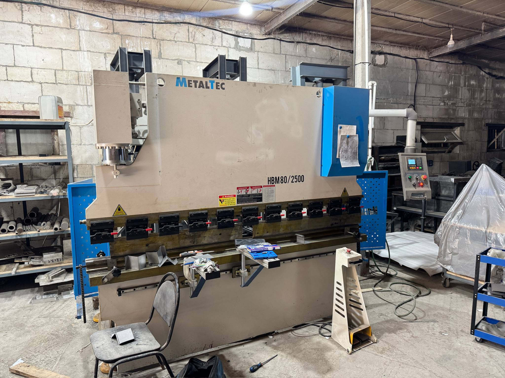
Замена гидравлических клапанов листогибочного пресса MetalTec HBM80/2500
Замена изношенных гидравлических клапанов управления листогибочного пресса MetalTec HBM80/2500. Старые клапаны давали утечки и нестабильное давление. Клиент — металлообрабатывающий цех в Москве. Клапаны заменены, давление стабилизировано.
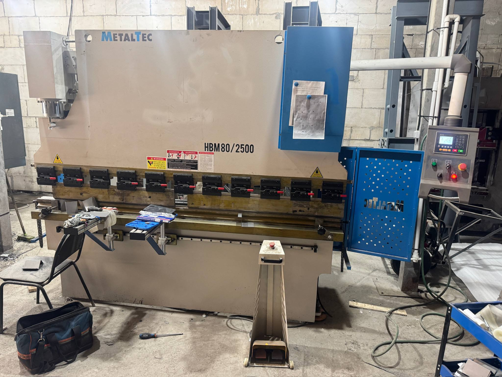
Замена гидравлических клапанов MetalTec HBM80/2500 (второй этап)
Второй этап работ по восстановлению гидравлики пресса MetalTec HBM80/2500 — замена оставшихся клапанов и промывка гидросистемы. После промывки заменено масло. Клиент — тот же цех в Москве. Гидравлика стабильна, пресс работает без нареканий.
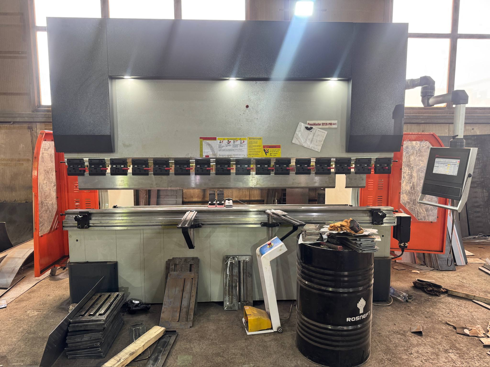
Обучение и инструктаж листогибочный пресс PressMaster 32135 PRO 4+1
Обучение и инструктаж операторов листогибочного пресса PressMaster 32135 PRO 4+1 на стойке ESA 630. Настройка базовых программ, обучение наладке под типовые детали. Клиент — производство в Калужской области. Операторы обучены, станок введён в серийное производство.
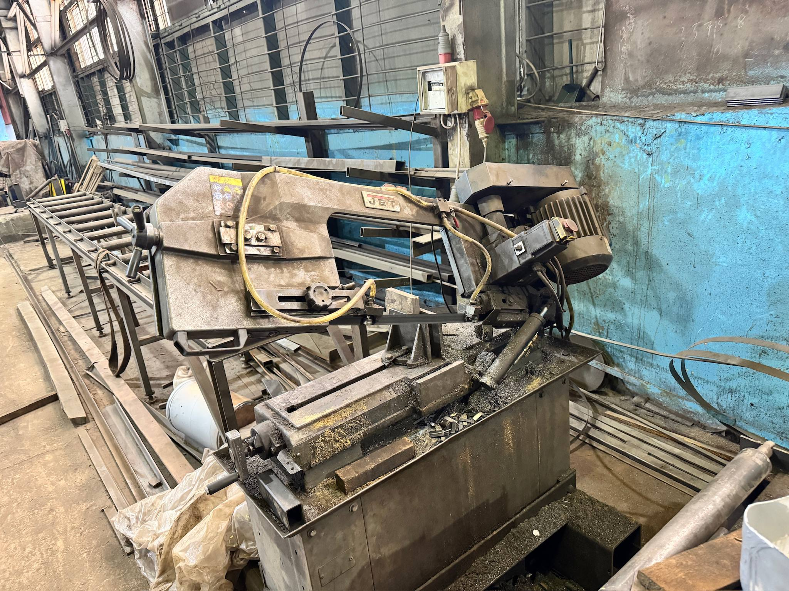
Демонтаж и монтаж главного двигателя ленточнопильного станка JET
Демонтаж, перемотка обмотки и монтаж главного двигателя ленточнопильного станка JET. Двигатель потерял мощность из-за межвиткового замыкания. Клиент — производство в Московской области. Двигатель восстановлен, станок работает на полной мощности.
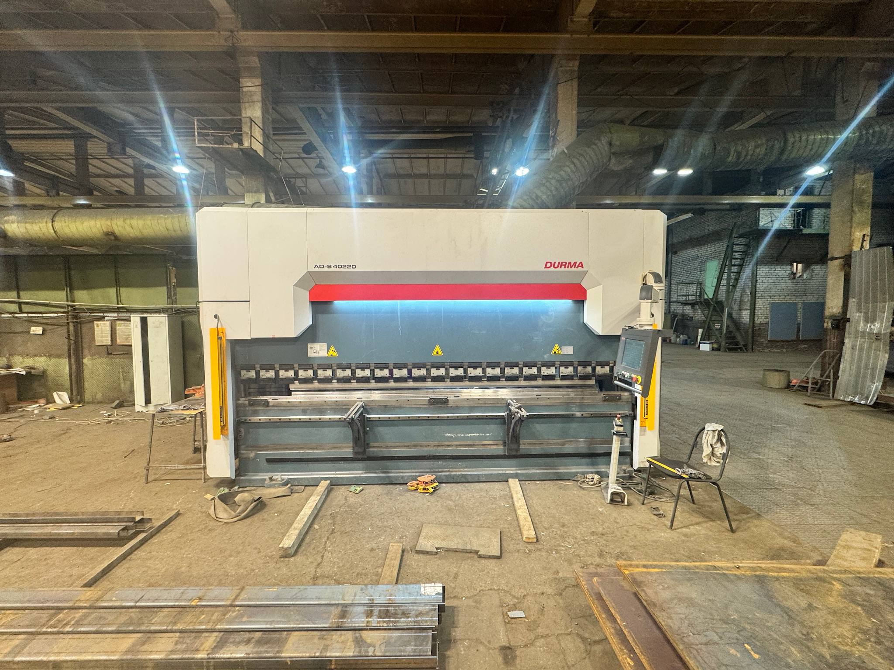
ПНР и настройка листогибочного пресса DURMA AD-S 40220
Пуско-наладочные работы листогибочного пресса DURMA AD-S 40220 на стойке DELEM 56. Настройка гидравлики, калибровка, программирование типовых операций. Клиент — завод в Подольске. Станок вышел на проектную мощность, выставлены программы для серийного производства.
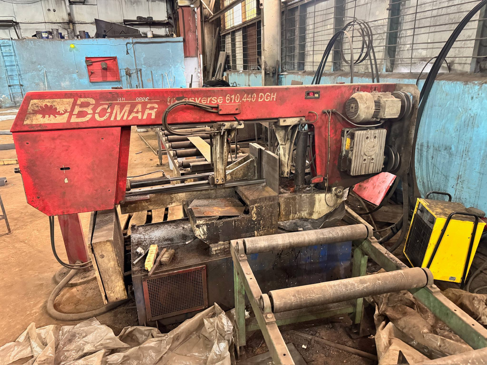
Замена редуктора ленточнопильного станка BOMAR traverse 610.440 DGH
Замена вышедшего из строя редуктора привода подачи ленточнопильного станка BOMAR traverse 610.440 DGH. Редуктор имел критический износ шестерён. Клиент — крупное производство в Москве. Редуктор заменён, подача полотна работает плавно, рез стабильный.